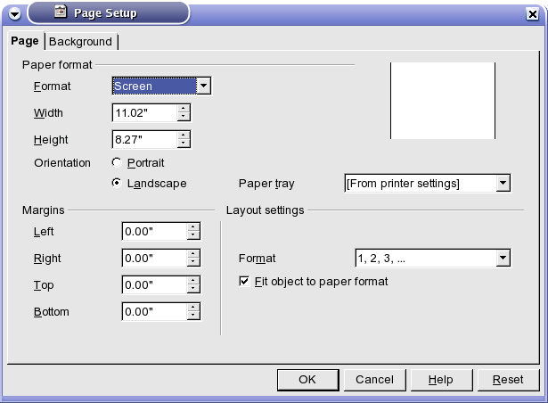
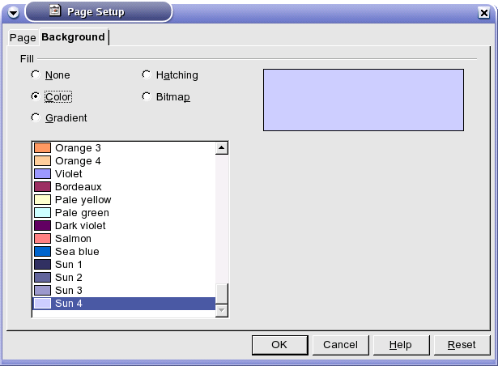

Podešavanja stranice se vrše tako što u padajućem meniju odaberete / .
Prozor sa podešavanjima stranice se sastoji od dve kartice Page i Background.
Kartica Page. Se sastoji iz tri segmenta Paper format, Margins i Layout settings.

- Paper format
- osobine papira.
- Format
- podešavanja vezana za prikaz prezentacije (ekran, papir, folija ...).
- Width
- širina slajda.
- Height
- visina slajda.
- Orientation
- orijentacija slajda (Portrait ili Landscape).
- Paper tray
- način pristupa štampaču.
- Margins
- podešavanje margina slajda.
- Left
- leva margina.
- Right
- desna margina.
- Top
- gornja margina.
- Bottom
- donja margina
- Layout settings
- opšta podešavanja izgleda.
- Format
- birate sistem numeracije slajdova.
- Fit object to paper format
- skalira grafičke objekte prema veličini slajda.
Druga kartica Background.

Birate pozadinu za vašu prezentaciju.
- None
- nema pozadine.
- Color
- birate boju iz palete boja.
- Gradient
- birate preliv boja iz palete.
- Hatching
- birate teksturu iz palete.
- Bitmap
- birate sličicu iz palete.